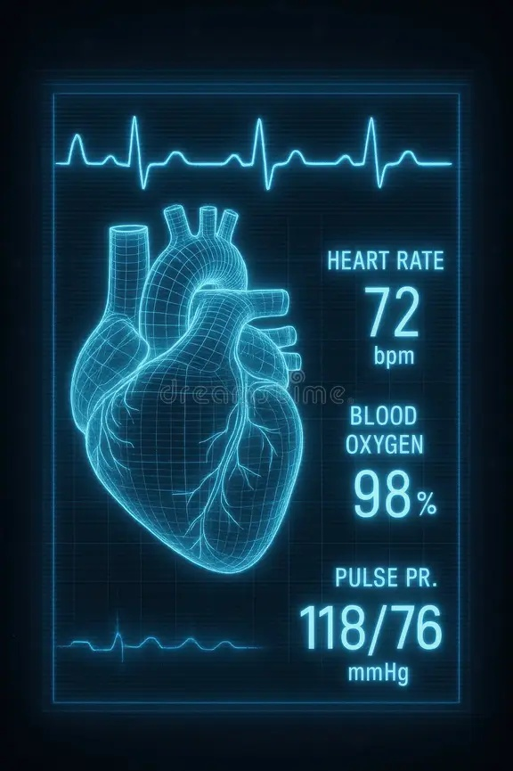

CARDIOVASCULAR CONTROL MODULE
CARDIAC OUTPUT
5.2 L/min
VASCULAR STRESS
12.4 kPa
CARDIAC TELEMETRY FEED
LIVE HUD // CAM_08
REAL-TIME VASCULAR VITALS
HEART RATE (BPM)
72 BPM
BLOOD OXYGEN (SpO2)
98 %
PULSE PRESSURE (BP)
118/76 mmHg
MYOCARDIAL PERFUSION
99.2%
[00:10:02] Cardiovascular antigravity damper locked at 0.38G.
[00:10:06] ECG baseline rhythm stable (Sinus rhythm).
[00:10:12] Oxygen saturation nominal at 98%.